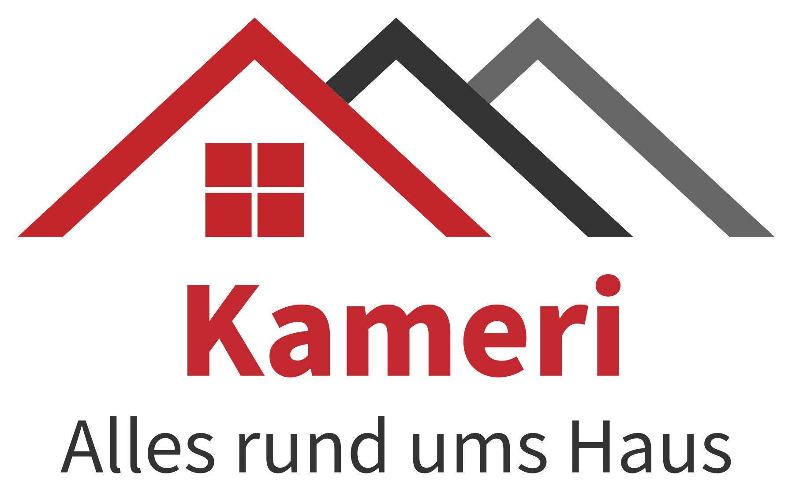

Laminat
Laminat bietet unterschiedliche Holzoptiken. Für die Auswahl sind neben dem Aussehen auch Nutzung, Aufbauhöhe und der vorhandene Untergrund wichtig.

KAMERI · BODENVERLEGUNG
Laminat, Vinyl und weitere Bodenbeläge auf Anfrage: Kameri verlegt Böden in Leimen, Heidelberg, Mannheim, Schwetzingen, Wiesloch und Umgebung.
Bodenverlegung anfragenLaminat bietet unterschiedliche Holzoptiken. Für die Auswahl sind neben dem Aussehen auch Nutzung, Aufbauhöhe und der vorhandene Untergrund wichtig.
Vinyl ist in vielen Oberflächen und Ausführungen erhältlich. Ob ein Belag für den jeweiligen Raum geeignet ist und wie er verlegt werden kann, klären wir vor der Ausführung.
Untergrund, Türanschlüsse und Übergänge beeinflussen die Verlegung. Teilen Sie uns mit, ob ein alter Belag vorhanden ist und ob Sockelleisten oder Übergangsprofile benötigt werden.
Maßgeblich ist der konkret beschriebene Leistungsumfang im Angebot. Materialbeschaffung, vorbereitende Arbeiten, Rückbau, Entsorgung und Anschlussarbeiten sind nur enthalten, wenn sie dort ausdrücklich aufgeführt sind. Bitte nennen Sie uns auch gewünschte Zusatzarbeiten.
LEIMEN & UMGEBUNG
Hilfreich sind Projektort, ungefähre Maße, aktueller Zustand und gewünschter Zeitraum. Besichtigung und Angebot sind kostenlos. Wir klären die weiteren Schritte persönlich.